Learning-Augmented MPC for Reentry Attitude Control
A reduced-order reentry attitude-control project about a useful kind of failure: nominal nonlinear MPC looks elegant, residual learning learns something measurable, and yet strict zero-violation angle-of-attack success stays stubbornly low until the problem is reframed around feasibility, slack, and hybrid learning as a proposal mechanism.
Scope boundary: this is a reproducible research-engineering benchmark, not a flight-valid reentry controller, a certified robust-MPC design, or a validated aerothermal vehicle model.
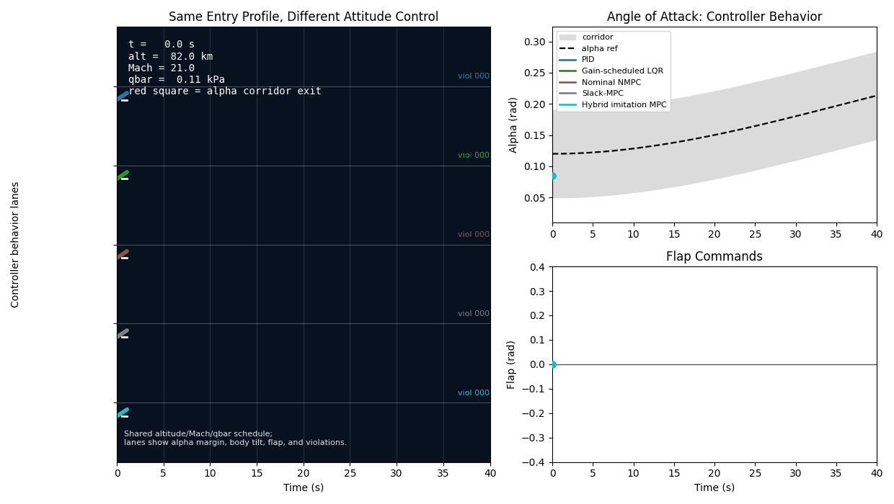
Abstract
This project asks a narrow question that turns out to be more interesting than a broad one: if a predictive controller is given a scheduled reentry attitude corridor, actuator position and rate limits, uncertainty, and a reduced-order longitudinal plant, what breaks first?
The first answer is uncomfortable. Nominal nonlinear MPC is better than the initial PID and gain-scheduled LQR baselines, but on the fixed paired Monte Carlo benchmark it succeeds in only 3/30 moderate scenarios and 3/30 stress scenarios. Constraint tightening, scenario MPC, and residual dynamics correction improve some smooth metrics, but they do not improve the strict binary success label. The controller keeps missing the alpha corridor.
The second answer is more useful. Diagnostics show that failures are dominated by angle-of-attack corridor misses, not simple flap-angle saturation. Later feasibility oracles estimate that the benchmark itself has a strict feasibility ceiling of 15/30 moderate scenarios and 11/30 stress scenarios under the audited actuator-truth-consistent setup. The final hybrid imitation plus slack-MPC architecture matches that ceiling while keeping MPC as the decision-making authority.
The result is not "AI solves reentry." The result is a disciplined learning-augmented MPC story: let nominal MPC fail honestly, diagnose the constraint geometry, estimate the feasible ceiling, then use learning as a prior or warm start inside a slack-aware constrained controller.
What this contributes
The contribution is not a new theorem or a flight-ready controller. It is a reproducible control story: define a strict corridor, build increasingly capable controllers, keep the benchmark fixed, and let the failures determine the next design decision.
| Claim | Evidence | Boundary |
|---|---|---|
| Nominal NMPC is the first serious baseline, but not robust enough. | It leads PID and gain-scheduled LQR but scores only 3/30 strict success in both uncertainty tiers. |
This is a reduced-order paired Monte Carlo benchmark, not a flight certification result. |
| Residual dynamics learning alone does not recover strict success. | The learned residual improves held-out MSE, yet residual-corrected NMPC remains at 3/30 strict success in both tiers. |
This rules out the tested residual-integration designs, not all learning-augmented MPC. |
| The dominant failure is a corridor-feasibility problem, not simply flap-angle saturation. | Failure diagnostics show median failed alpha misses of about 0.024 rad in moderate cases and 0.064 rad in stress cases, with median flap angle saturation at 0.0. |
The diagnostic measures miss size; it does not validate relaxing the corridor. |
| The best architecture is hybrid: learning proposes, MPC decides. | Hybrid imitation plus slack-MPC matches the audited ceiling: 15/30 moderate strict success and 11/30 stress strict success. |
Matching the reduced-order ceiling is not the same as exceeding it or proving vehicle-level safety. |
How the project was built to be falsifiable
The most important design decision was not a controller. It was the evidence workflow. Every experiment stage had to write stable CSV, JSON, figure, and log artifacts before it earned a place in the article. That sounds like bookkeeping, but it changes the tone of the research. It makes it harder to turn a good-looking plot into an unsupported claim, and it makes it easier to preserve negative results without burying them.
The repository uses a src/reentry_mpc package layout, experiment-specific configs, experiment-specific scripts, and tests for every major milestone. The purpose is mundane and useful: make the blog read like a research artifact rather than a memory of a notebook session. If the article says a controller scored 3/30, the reader should be able to trace that number to a summary CSV, a config, and a rollout directory.
| Decision | Why it mattered | Tradeoff |
|---|---|---|
| Artifact-first experiment stages | Each claim points to saved metrics, plots, and configs. | More boilerplate, but far less ambiguity later. |
| Fixed benchmark labels | Controller changes remain comparable across experiment stages. | Some promising variants look bad because the metric is intentionally strict. |
| Additive experiment history | Earlier scripts and outputs remain valid as the project grows. | The internal milestone list becomes long, but the history stays auditable. |
| Saved negative results | Failures become evidence about feasibility, timing, and architecture. | The story is less triumphant, but much more useful. |
This is why the article spends so much time on failures. A negative result from a reproducible benchmark is not dead weight. It is a constraint on the next hypothesis. Constraint tightening failed to move strict success, so the problem was not just missing margin. Residual correction failed to move strict success, so open-loop residual prediction was not enough. Oracle replay failed to recover missed feasible cases, so imitation error alone was not the whole explanation.
The project deliberately avoids changing the alpha corridor, tolerance, scenario seeds, and failure labels whenever a controller is being compared against an earlier controller stage. Otherwise the article would become a sequence of moving targets.
The control problem
The vehicle model is intentionally reduced. It is not a six-degree-of-freedom entry simulator. It is a longitudinal attitude benchmark designed to keep the hard control ingredients visible: angle of attack, pitch rate, pitch angle, scheduled atmospheric conditions, flap authority, actuator lag and delay, and uncertainty.
The state and input are:
The success definition is deliberately strict. Good tracking is not enough. A rollout can have lower RMS alpha error and still fail if it leaves the allowed alpha corridor. That matters because the corridor stands in for aerodynamic, thermal, and stability limits. In this benchmark, the contract is not "look smooth"; the contract is "stay inside."
That strictness created the project’s main tension. Most controllers could eventually produce plausible-looking flap commands. Many could reduce average tracking error. But strict success was brittle because a single alpha excursion could flip the label. That made the benchmark frustrating in exactly the right way: it prevented the project from declaring success based on a pretty trajectory.
| Layer | What it tests | Why it was included |
|---|---|---|
| PID and LQR | Classical closed-loop tracking | Establish a non-learning baseline before optimizing over a horizon. |
| Nominal NMPC | Finite-horizon constrained planning | Enforce flap limits, penalize slack, and expose solver/corridor pressure. |
| Robust probes | Tightened and multi-future planning | Test whether simple robustness structure recovers strict success. |
| Residual learning | Model mismatch prediction | Ask whether learned dynamics corrections help closed-loop constraints. |
| Slack and oracle analysis | Feasibility and recoverability | Separate bad control from cases that are not strictly feasible as posed. |
Model, schedule, and corridor
The first model decision was to schedule altitude, velocity, Mach, density, and dynamic pressure rather than propagate a full translational reentry trajectory. That was a deliberate reduction, not an oversight. It isolates the attitude-control question while keeping the reentry-specific pressure terms that make the flap effectiveness and aerodynamic moments change over time.
A full entry simulation would be more impressive, but it would also multiply the number of unvalidated assumptions. This project needed a controllable ladder: first make the longitudinal attitude dynamics, corridor, actuator limits, and uncertainty reproducible; only then ask whether a more complete vehicle model is worth adding.
The nominal plant is a scheduled reduced-order attitude model:
The Monte Carlo truth plant perturbs that model:
where w includes density scale, aerodynamic coefficient bias, actuator lag, actuator delay, sensor noise, initial state error, and disturbance moment. The point is not to certify a vehicle model. The point is to make the controller confront enough mismatch that nominal planning can fail in informative ways.
The alpha-dynamics bug that changed the baseline
One early correction mattered enough to preserve in the story. The reduced alpha dynamics were changed to use pitch rate:
The reason is dimensional and physical. Angle-of-attack rate has units of radians per second, so the kinematic attitude contribution should be pitch rate, not pitch acceleration. In reentry shorthand, this is the reduced-order echo of alpha_dot ~= q - gamma_dot. Fixing this made the deterministic nominal NMPC result meaningful: the controller was no longer compensating for a model equation with the wrong state derivative structure.
This kind of correction is easy to hide in a polished article. It is more useful to expose it. The point of the simulator stage was not to pretend the first reduced model was perfect. The point was to build enough tests and artifacts that a sign, unit, or derivative mistake could be found before the project started judging learning algorithms.
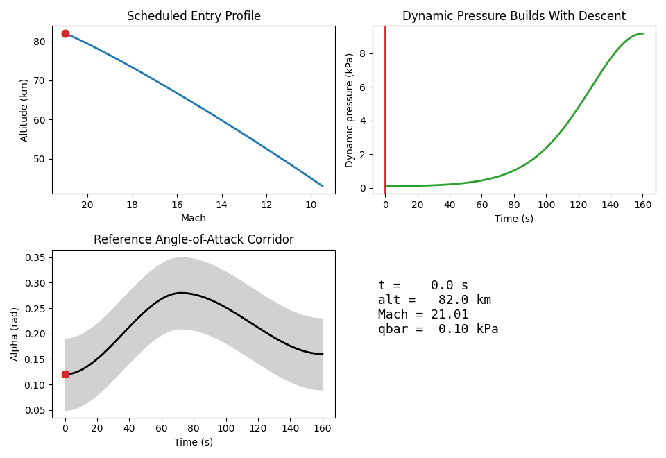
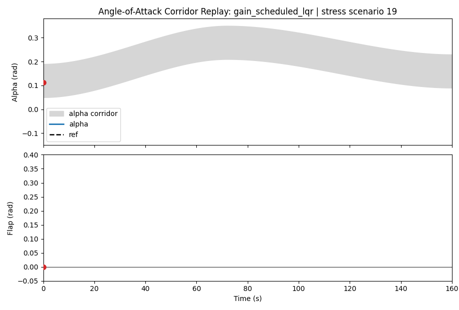
The corridor is:
The actuator is limited in both position and rate:
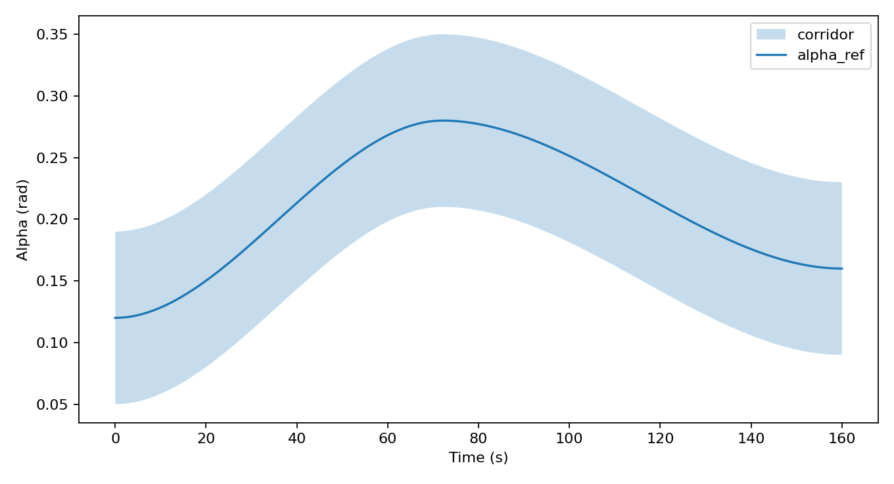
Why the classical baselines mattered
The PID and gain-scheduled LQR controllers were not included as straw men. They were included because a learning-augmented MPC project that cannot beat or learn from simple classical baselines is usually not ready for learning. The baselines also forced the project to define shared rollout code, shared actuator limiting, and shared success metrics before the optimizer entered the picture.
The PID controller gave a direct alpha and pitch-rate tracking reference point. The gain-scheduled LQR went one step deeper: the nonlinear reduced-order model was finite-difference linearized at schedule points, then small discrete Riccati problems produced local feedback gains. This kept the baseline dependency footprint small while still giving the project a real scheduled linear controller.
The outcome was not "PID and LQR are bad." The outcome was more specific: under this reduced-order plant, this reference profile, this actuator envelope, and this strict alpha corridor, both baselines failed the configured corridor success criteria. That made them useful. They showed that ordinary tracking feedback was not enough to manage a future constraint band.
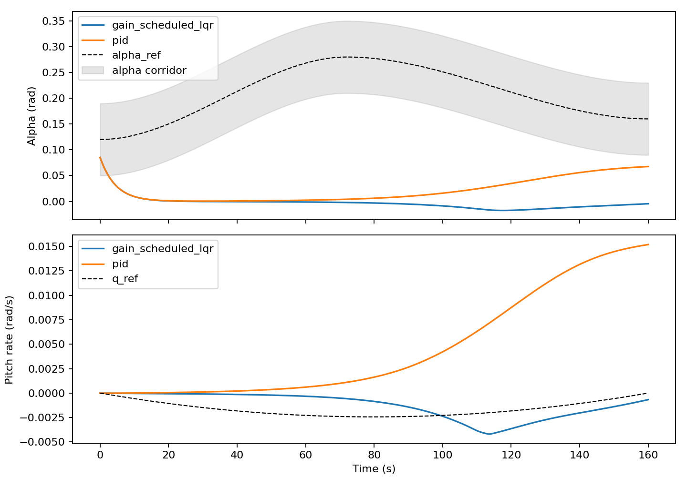
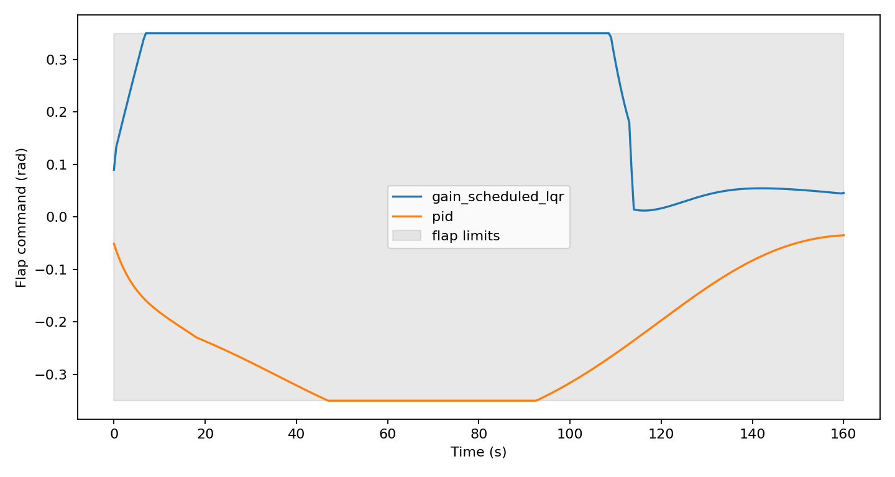
| Design choice | Reason | What it taught |
|---|---|---|
| Shared rollout runner | Keep controller comparisons fair. | Later NMPC and Monte Carlo experiments could reuse the same semantics. |
| Finite-difference LQR linearization | Avoid adding a larger symbolic or SciPy dependency for the baseline. | The project could still test scheduled linear feedback against nonlinear rollout behavior. |
| Strict corridor labels | Prevent smooth tracking plots from being called success. | Baseline failures motivated constrained planning rather than more gain tuning. |
Why nominal NMPC was the right serious baseline
PID and gain-scheduled LQR are valuable because they are simple, inspectable, and hard to dismiss. But they do not naturally optimize future corridor pressure. NMPC does. At each control step, the controller solves a finite-horizon problem with tracking cost, control effort, flap-rate penalty, hard actuator bounds, and soft logged state-corridor slack:
Soft state constraints are not an excuse to ignore the corridor. They are instrumentation. When the optimizer needs slack, it leaves evidence. That becomes crucial later, because it lets the project distinguish solver failure, tracking error, actuator saturation, and true constraint pressure.
Why soften alpha and pitch-rate constraints?
The first temptation was to make every corridor bound hard. That is cleaner mathematically, but it is brittle for this stage of the project. If the current state is already near the boundary, if the reduced model is mismatched, or if the actuator cannot move fast enough, a hard state corridor can turn the whole rollout into "the optimizer failed." That is less informative than a solved trajectory with explicit slack.
The compromise was asymmetric: flap position and flap-rate limits are hard, because actuator commands should not exceed the configured hardware envelope. Alpha and pitch-rate corridors are soft, heavily penalized, and logged. This keeps the optimizer alive while making violations visible. It also creates the diagnostic language used later: predicted slack, realized corridor miss, first violation time, and required corridor expansion.
The tolerance was a numerical decision, not a robustness claim
The nominal NMPC experiment also introduced a small 0.001 rad realized corridor-counting tolerance. This was added after the alpha dynamics correction and a feasible nonzero initial pitch-rate condition left only sub-milliradian boundary effects in the deterministic nominal rollout. The raw trajectory and margins are still saved, so the tolerance does not hide the data. It prevents numerical boundary grazing from being presented as a meaningful control failure.
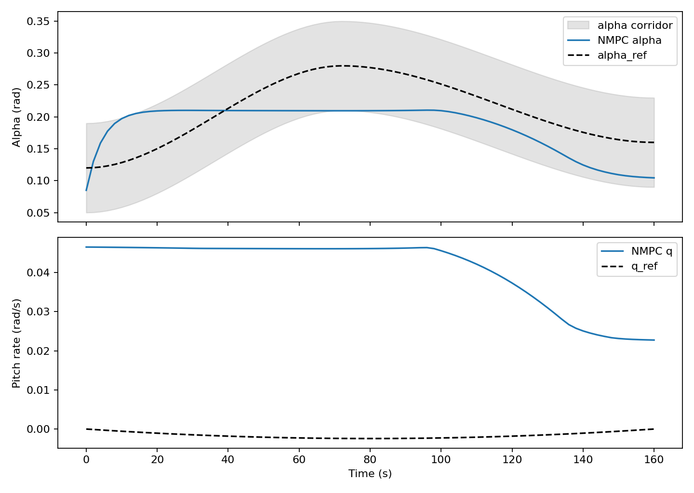
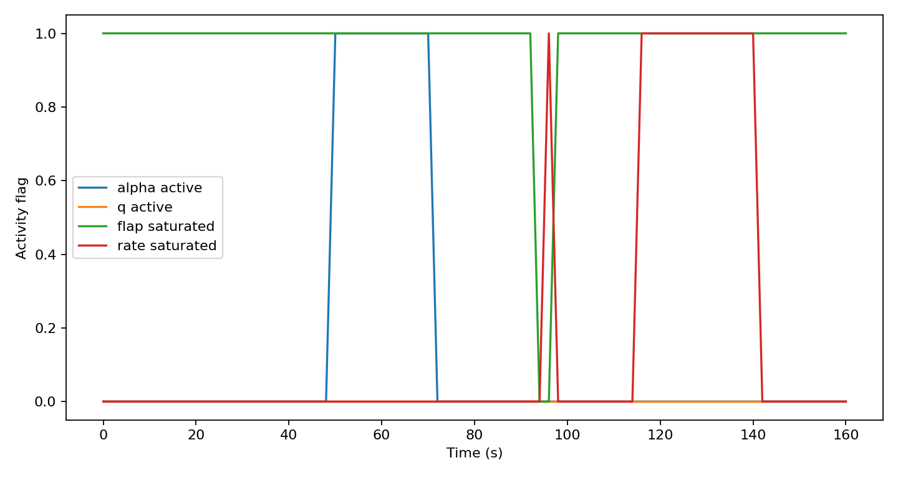
The paired Monte Carlo benchmark
The paired Monte Carlo benchmark made the comparison honest. PID, gain-scheduled LQR, and nominal NMPC were evaluated on the same sampled scenarios in a moderate tier and a stress tier. This pairing matters: each controller sees the same scenario seed, which makes the comparison about controller behavior rather than sampling luck.
The controllers remained nominal. They did not get to inspect the sampled perturbed plant and adapt their internal model to it. That distinction is important. This benchmark was not measuring how well a controller performs with oracle knowledge of the uncertainty. It was measuring degradation when a controller designed for the nominal model is rolled through a perturbed plant.
The uncertainty set was deliberately broad enough to expose different failure signatures: atmosphere density scaling changes dynamic pressure, aerodynamic coefficient scaling changes moment response, actuator lag and delay weaken timing, sensor noise corrupts feedback, initial error changes how much recovery room remains, and disturbance moment tests whether the controller has enough authority to reject external torque.
| Tier | PID | Gain-scheduled LQR | Nominal NMPC |
|---|---|---|---|
| Moderate | 1/30 strict | 0/30 strict | 3/30 strict |
| Stress | 2/30 strict | 0/30 strict | 3/30 strict |
Nominal NMPC is the best of this first group, but 3/30 is not a robustness result. It is a warning light. The strongest controller in the initial ladder is still mostly failing the strict corridor contract.
| Uncertainty source | Control consequence | Why it matters |
|---|---|---|
| Density scale | Moves dynamic pressure and aerodynamic authority. | Shows the controller is not only tracking a fixed toy response. |
| Aero coefficient scale | Changes how flap commands map to pitch moments. | Creates model mismatch that residual learning can plausibly target. |
| Actuator lag and delay | Makes the applied flap trail the optimized command. | Explains why a nominal plan can be too late even when the command looks reasonable. |
| Initial attitude error | Consumes corridor margin near the start of the rollout. | Connects early violations to feasibility, not only feedback quality. |
| Disturbance moment | Adds unmodeled torque that must be rejected by flap authority. | Separates smooth nominal success from robustness pressure. |
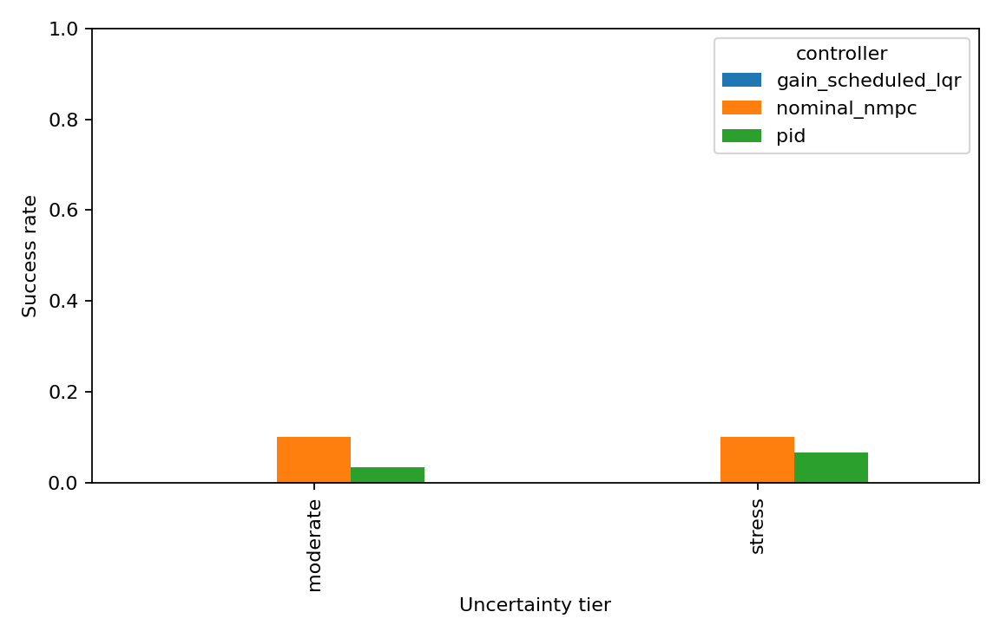
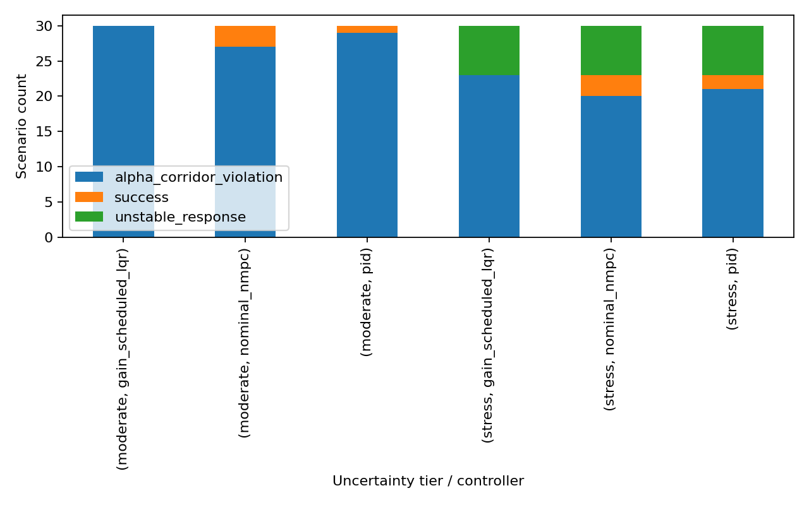
Robust-control probes that did not rescue success
Constraint tightening was the first robust-MPC-style attempt. Instead of planning against the evaluation corridor, the controller plans against a smaller internal corridor:
The intuition is good. If uncertainty can push a trajectory away from prediction, plan with margin. The result was informative but negative: tightened NMPC also scored 3/30 moderate and 3/30 stress, matching nominal NMPC on the full paired benchmark. It slightly reduced mean RMS alpha error, but it did not move the success label.
This mattered because constraint tightening was the simplest robust-control hypothesis. It was cheap to explain, cheap to implement, and fair to evaluate because the external benchmark stayed unchanged. Its failure ruled out a comfortable story: the nominal controller was not merely grazing the boundary and in need of a small inward buffer. Some cases required a different objective, different prediction state, or a different feasibility interpretation.
Scenario NMPC then optimized one shared flap sequence across multiple design futures:
That formulation is more honest about uncertainty, but it also makes the nonlinear program harder. On the overlapping subset used for the first scenario-MPC run, the controller slightly reduced mean RMS alpha error but did not improve binary success, and solver reliability became a limitation in stress scenarios.
The subset design was a practical compromise. Scenario NMPC expands the optimization because each candidate command sequence must satisfy several predicted futures. Running the full 30 + 30 benchmark immediately would have slowed iteration without adding much insight. The solution was to evaluate the first 12 scenarios per tier and filter the older nominal and tightened-MPC results to exactly that same overlap. The comparison stayed paired even though the first scenario-MPC pass was smaller.
| Probe | Design intent | Observed problem |
|---|---|---|
| Constraint tightening | Add static planning margin while preserving the original evaluation corridor. | RMS alpha error improves slightly, but strict success does not. |
| Scenario NMPC | Choose one command sequence acceptable across several possible plants. | Optimizer reliability becomes a stress-tier limitation, and strict success still does not improve. |
| Faster/corridor-aware NMPC variants | Update more often and weight corridor centering more strongly. | Average error can fall while zero-violation success remains unchanged or worse. |
The repeating pattern is the key technical point: a controller can improve a smooth tracking metric and still fail the constraint metric that matters.
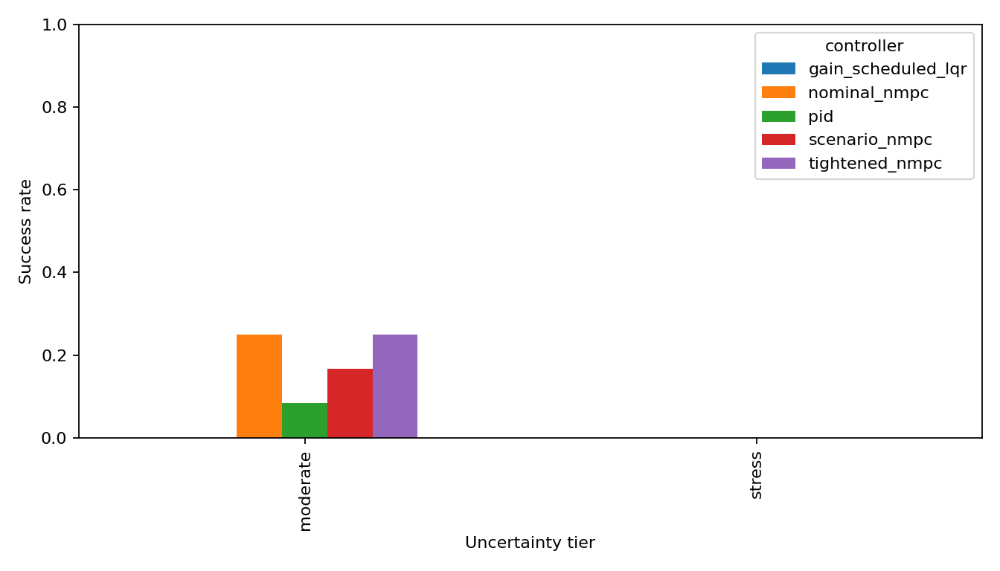
Why the MPC variants missed
The strict benchmark was not asking for small average tracking error. It was asking for zero realized corridor violations. Those are different mathematical objects. Most of the MPC variants optimized an integral tracking-and-effort objective with soft corridor penalties:
But the success label is closer to an indicator over the entire closed-loop trajectory:
A controller can reduce J_track while leaving S = 0. That is exactly what happened repeatedly. The objective rewarded being close most of the time. The benchmark punished being outside the corridor at any time.
Nominal NMPC optimized the wrong plant
Nominal NMPC predicts:
while the rollout follows:
Define the one-step model error:
Even if the predicted trajectory satisfies the corridor with a small margin,
the realized trajectory can fail whenever the alpha component of the accumulated prediction error exceeds that margin:
In other words, nominal NMPC was often solving a clean finite-horizon problem whose feasible-looking prediction did not have enough margin against actuator lag, delay, aerodynamic scaling, disturbance moment, and initial-condition error.
Constraint tightening helped only if the miss was smaller than the buffer
Tightened NMPC replaced the planning corridor with:
That works only under a condition like:
The diagnostics showed a harder situation. Failed moderate alpha-corridor cases needed about 0.024 rad median extra alpha margin, while failed stress cases needed about 0.064 rad. A small static buffer could improve average tracking but still lose the binary label whenever the realized miss exceeded the planned margin or occurred early enough that the controller had little recovery time.
Scenario NMPC made uncertainty explicit but harder to solve
Scenario NMPC asked one command sequence to work across several design futures:
Its implicit objective was closer to:
with shared controls across futures. This is more robust in spirit, but it increases the nonlinear program size and can make the compromise command conservative or numerically fragile. The shared sequence may reduce average predicted error across the chosen futures while still failing the realized future that matters:
That is why scenario planning was a useful test but not a rescue. It addressed model uncertainty structurally, but not enough to guarantee zero realized corridor exits under the benchmark.
Residual-corrected MPC fixed a local derivative, not a trajectory-level feasibility problem
The learned residual variants tried to replace:
with:
where z contains schedule and atmosphere features. This helps only if the learned correction reduces the closed-loop corridor miss in the states and times that matter:
Improving residual MSE does not guarantee that. The residual model is trained on local derivative error, but the success label depends on closed-loop state constraint satisfaction after integration, feedback, actuator lag, delay, and optimizer choices. The learning target and the benchmark target were mathematically misaligned.
Slack-MPC changed the priority
The later slack-first controller changed the optimization from "track the reference while penalizing violations" toward "minimize violation first, then worry about centering and effort." A simplified version is:
with W_s dominating the lower-priority terms. The mathematical pivot is simple: the controller was no longer primarily rewarded for staying close to the reference. It was primarily penalized for needing corridor slack. That better matched the strict success label.
The core diagnosis: earlier MPC variants optimized smooth surrogate objectives for a discontinuous zero-violation success metric. Slack-MPC did better because its objective was closer to the benchmark’s actual failure condition.
Residual learning, and why prediction was not enough
The learning hypothesis was reasonable. If the nominal model and perturbed truth model differ, learn the residual:
The residual-learning track generated supervised residual data and trained a PyTorch MLP residual model. The predictor improved test MSE over a zero-residual baseline by about 11.56%, while aggregate MAE was slightly worse. That supports a careful supervised-learning claim, not a closed-loop control claim.
The residual target was a derivative correction rather than a trajectory-level success label:
x_dot_nominal = f_nominal(x, u, mach, h)
x_dot_true = f_truth(x, u, mach, h)
residual = x_dot_true - x_dot_nominalThat was the cleanest first supervised-learning target. It separates model mismatch from controller behavior. If the learned model failed even at this local derivative task, it would be hard to justify embedding it into MPC. But succeeding at derivative prediction is only the first gate. The controller still has to use that correction in a way that improves a constrained trajectory.
The PyTorch and CasADi bridge problem
The first integration problem was not philosophical; it was software and optimization structure. The existing NMPC was a CasADi Opti graph. The trained residual model was PyTorch. Dropping an arbitrary neural network directly inside the symbolic nonlinear program would have made the solver path more complex and less auditable.
The project therefore tested a ladder of integration compromises. The first closed-loop probe predicted a local q_dot residual and converted it into an equivalent pitching-moment coefficient bias for the current solve. A second version fit a polynomial/ridge surrogate that could live inside CasADi symbolically. The consolidated version scheduled one PyTorch-predicted residual bias per horizon row before solving, so the optimizer saw a fixed correction sequence rather than a neural network embedded in its decision graph.
| Experiment | Integration choice | Why that choice was made | Result |
|---|---|---|---|
| Local correction | Local equivalent-moment correction | Preserve the existing NMPC solver and test a minimal learned correction. | No success-rate or RMS-alpha improvement on the subset. |
| Symbolic surrogate | CasADi-compatible polynomial residual surrogate | Embed a symbolic correction throughout the horizon. | Residual gains do not improve success; larger gains worsen RMS alpha error. |
| Scheduled neural bias | Horizon-scheduled PyTorch residual biases | Let the neural model affect every prediction interval without entering the NLP graph. | All variants remain at 3/30 strict success in both tiers. |
The next tests embedded the residual in MPC in several ways: a local learned correction, a horizon-embedded polynomial surrogate, and a consolidated PyTorch residual-corrected NMPC benchmark. The full paired result was the cleanest:
| Tier | Nominal NMPC | Residual-corrected NMPC | Residual-corrected tightened NMPC |
|---|---|---|---|
| Moderate | 3/30 strict | 3/30 strict | 3/30 strict |
| Stress | 3/30 strict | 3/30 strict | 3/30 strict |
This is the moment where many project writeups would get vague. The honest interpretation is sharper: learning a local derivative correction is not the same as learning how to preserve feasibility under actuator limits, delay, uncertainty, and zero-violation labels.
The failed residual path also changed the research question. Before the consolidated residual benchmark, it was plausible that the nominal model was the main bottleneck and that a learned dynamics correction would unlock success. After that benchmark, the explanation was too small. The residual model could move the prediction and slightly improve some average errors, but the hard event was still a trajectory-level corridor violation.
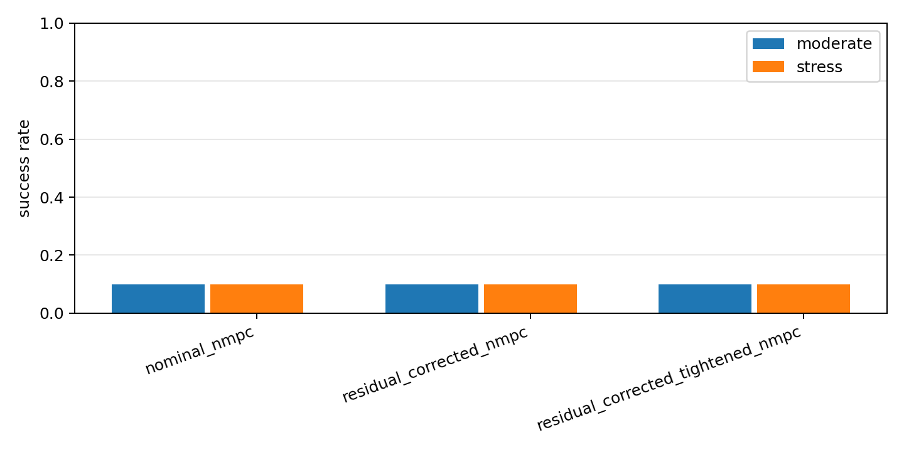
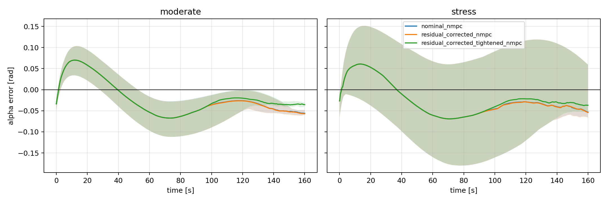
What each ablation ruled out
The article becomes much stronger when the failed variants are treated as hypothesis tests rather than side quests. Each controller change was allowed to kill one plausible explanation for the low success rate.
| Hypothesis | Experiment | What happened | What it ruled out |
|---|---|---|---|
| The nominal controller only needs a small planning buffer. | Constraint-tightened NMPC | Strict success remains 3/30 in both tiers. |
Static tightening alone is not enough. |
| The controller needs to see multiple futures. | Scenario NMPC | Mean error improves slightly, but strict success does not and solver reliability worsens in stress cases. | Multi-future prediction without better feasibility handling is insufficient. |
| The nominal dynamics mismatch is the main bottleneck. | Residual-corrected MPC | Open-loop residual MSE improves, but strict success does not move. | Local model correction is not the same as trajectory-level constraint recovery. |
| Fault fallback hooks will rescue bad cases. | Deterministic fault injection | Fallback-enabled residual NMPC still records 0/6 strict successes. |
Solver-failure fallback does not fix plant/corridor failures. |
| Pure imitation error explains missed oracle-feasible cases. | Oracle-command replay | Replay recovers 0/1 missed moderate and 0/3 missed stress strict successes. |
The remaining gap is not just ridge-policy command error. |
| Learning should replace the optimizer. | Hybrid imitation plus slack-MPC | The learned prior is useful while MPC remains the decision layer. | The cleaner architecture is not policy-only; it is learning-guided constrained optimization. |
This is the difference between a result table and a research story. A result table says what won. An ablation narrative says which explanations are no longer credible.
The diagnostic turn
After the residual benchmark, the right question changed from "which controller wins?" to "how exactly do failures fail?" The failure-diagnostics pass computed the required alpha corridor expansion for each rollout:
The result was one of the most useful findings in the project. Failed moderate alpha-corridor cases needed about 0.024 rad median extra alpha margin. Failed stress alpha-corridor cases needed about 0.064 rad. Stress unstable-response cases violated alpha early, around 4.0 s median first alpha violation. Median flap angle saturation was 0.0 in the diagnostic groups.
That last detail matters. If failures were mostly flap-angle saturation, the next step would be obvious. But the data pointed instead toward timing, initial drift, lag/delay pressure, prediction mismatch, and feasibility. The corridor misses were not just the flap hitting a stop.
Fallback hooks were not the same as fault tolerance
The fault-injection experiment added deterministic probes: stuck flap, reduced flap effectiveness, biased alpha measurement, delayed actuator, sudden density jump, and a large unmodeled disturbance moment. It also logged fallback hooks for previous-feasible MPC control, residual-error-triggered tightening, and LQR safe mode after repeated solver failures.
The result was another useful negative result. The fallback-enabled controller still scored 0/6 strict successes across the fault cases. Constraint tightening activated frequently, but previous-feasible-control and LQR safe-mode fallbacks did not activate in the saved run because the failures were not mainly repeated solver failures. They were plant/corridor failures. That distinction prevented a false fix: adding solver-failure fallbacks does not solve a trajectory that is already leaving the corridor under a faulted plant.
Strict success and controlled recovery had to split
The safety-first controller experiment introduced a second metric: controlled recovery. Strict success keeps the original zero-violation benchmark label. Controlled recovery asks a different question: did the controller keep the response bounded without instability or solver collapse, even if it grazed or missed the corridor?
This vocabulary mattered because the project needed to stop treating all failures as identical. A tiny bounded alpha miss and an unstable response are both strict failures, but they imply different engineering next steps. The saved safety-first probe still scored 0/3 strict successes in both tiers, while controlled recovery reached 2/3. That did not solve the benchmark, but it gave the article a more honest way to discuss partial safety behavior.
| Question | Metric | Why it changed the next design decision |
|---|---|---|
| Did the rollout obey the original corridor exactly? | Strict success | Preserves the hard benchmark contract. |
| Did the rollout stay bounded despite a miss? | Controlled recovery | Separates bounded near misses from unstable responses. |
| How much extra alpha margin would cover the miss? | Needed alpha expansion | Distinguishes small boundary errors from large feasibility gaps. |
| When did the trajectory first fail? | First violation time | Identifies early cases where feedback has little recovery room. |
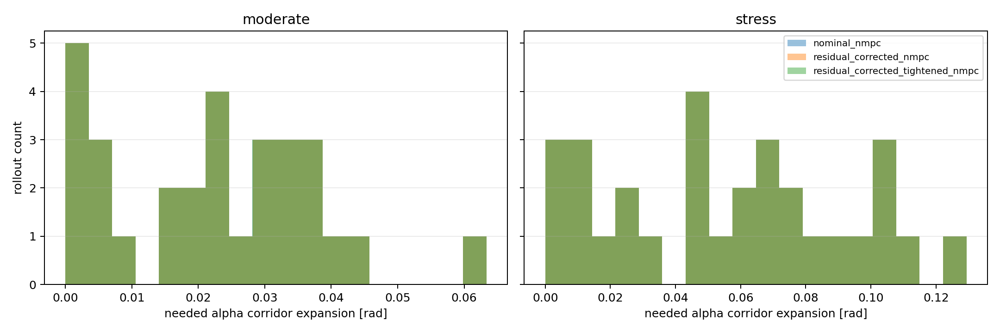
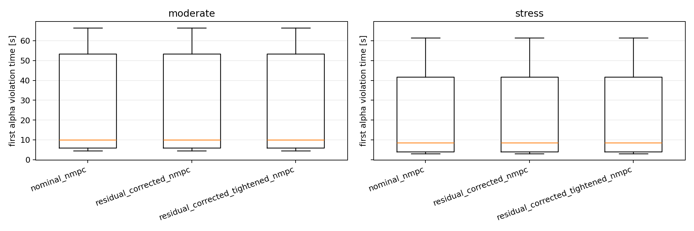
A single-scenario autopsy
The summary tables say the main story, but one scenario makes the mechanics easier to see. In the first moderate uncertainty scenario, the nominal controller is not unstable and it does not run out of flap angle. It simply spends too much of the rollout outside the alpha corridor.
| Controller | Strict label | RMS alpha error | Max alpha error | Alpha violation samples | Flap angle saturation |
|---|---|---|---|---|---|
| Nominal NMPC | alpha corridor violation | 0.0711 rad | 0.1138 rad | 123 | 0.000 |
| Residual-corrected NMPC | alpha corridor violation | 0.0711 rad | 0.1138 rad | 123 | 0.000 |
| Residual-corrected tightened NMPC | alpha corridor violation | 0.0696 rad | 0.1138 rad | 123 | 0.000 |
| Centered slack-MPC | success | 0.0341 rad | 0.0537 rad | 0 | 0.000 |
| Hybrid blended slack-MPC | success | 0.0342 rad | 0.0537 rad | 0 | 0.000 |
This case is the project in miniature. The residual correction does not fix the failure because the failure is not simply a missing local derivative term. The tightened residual controller improves RMS alpha error a little, but the same strict violation count remains. Slack-MPC changes the optimization priority: it treats corridor slack as the first thing to avoid, rather than a secondary penalty behind reference tracking. The hybrid controller keeps that same constrained decision layer and uses learning only to propose a better command prior.
The design decision that follows is subtle but important: if the metric is zero corridor violations, then average tracking error is not the right organizing objective. The controller must be built around feasibility pressure first, and tracking elegance second.
Feasibility ceiling and oracle imitation
The slack oracle is not a deployable controller. It is non-causal and full-horizon. Its purpose is diagnostic: estimate how many scenarios are strictly feasible at all under the modeled truth dynamics and actuator limits.
The key design choice was to optimize slack before tracking elegance. Earlier controllers were often judged by RMS alpha error, but the failures were corridor failures. The oracle therefore asks a different question: if the whole future were known, how small could the alpha and pitch-rate corridor violations be under the same flap limits?
The later audited feasibility ceiling is the reframing point:
| Tier | Audited strict ceiling | Audited controlled recovery ceiling |
|---|---|---|
| Moderate | 15/30 | 24/30 |
| Stress | 11/30 | 17/30 |
That does not mean the real vehicle has this ceiling. It means the configured reduced-order benchmark has this ceiling under the audited oracle formulation. Strict success was no longer just a controller-tuning target. It was partly a feasibility and corridor-design question.
Why oracle imitation came before a bigger neural policy
The first oracle-imitation controller used a small ridge-regression policy rather than jumping straight to a neural policy. That was intentional. The project did not yet need a more expressive learner; it needed to know whether the oracle’s command structure was useful online at all. A linear policy over corridor-centered features is easier to inspect, easier to reproduce, and easier to diagnose when it fails.
Scaling to the full benchmark showed both promise and a trap. The ridge policies reached 15/30 strict successes in the moderate tier and 11/30 in the stress tier, with controlled recovery of 24/30 and 17/30. But aggregate success counts hid scenario swaps: the policy could match an oracle count while missing specific oracle-feasible cases and succeeding elsewhere.
The autopsy that changed the next controller
The missed-case autopsy replayed oracle raw flap command sequences through the uncertain plant for missed oracle-feasible cases. This tested a specific hypothesis: maybe the ridge policy failed only because it imitated the oracle command poorly. If replaying the oracle command recovered the misses, the next step would be better imitation.
Replay recovered 0/1 missed moderate strict successes and 0/3 missed stress strict successes. Some alpha misses shrank, but none crossed the strict success boundary. That result redirected the project away from "train a bigger policy" and toward actuator-aware closed-loop replanning. The failure was not only command imitation error; it was also transfer through actuator lag, uncertainty, and online correction needs.
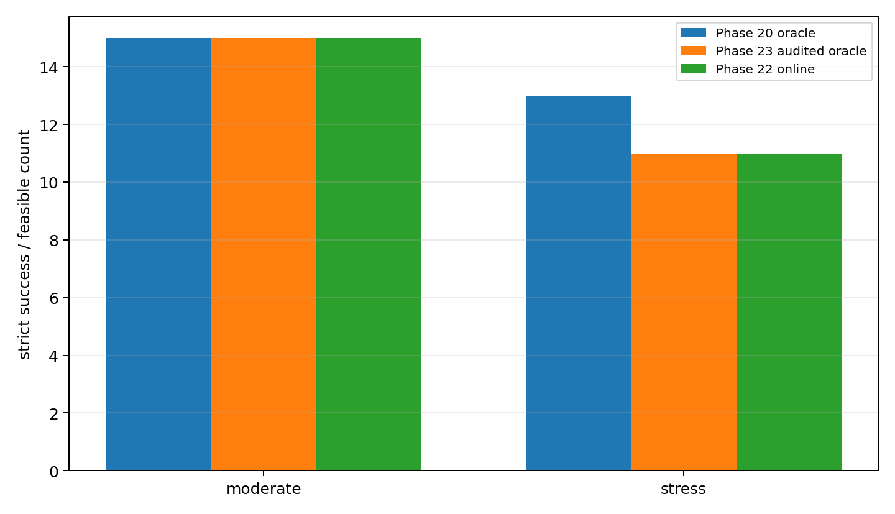
Hybrid imitation plus slack-MPC
The final architecture uses learning in the place that earned trust: as a proposal or warm start, not as the sole authority. The learned oracle-imitation policy proposes a command prior:
where z_k includes state, reference, corridor, schedule, and actuator-context features. MPC still solves the constrained problem:
subject to the same actuator-aware dynamics and constraints. In other words: learning suggests, MPC checks and decides.
This is the central design philosophy of the project. The learner should not bypass the constraints that made the benchmark meaningful. It can propose a useful shape for the command sequence, pull the optimizer toward oracle-like behavior, or reduce initialization burden. But the final command still comes from a controller that knows the actuator limits, slack priorities, and prediction dynamics.
That architecture also makes the negative residual-learning result less disappointing. Learning did not help much when it was asked to be a local dynamics patch. It became more credible when it was trained on the object the controller actually needed: a slack-minimizing command strategy. The target changed from "predict the derivative mismatch" to "help the constrained optimizer find the kind of command sequence that preserves feasibility when possible."
| Story stage | Moderate strict | Stress strict | Interpretation |
|---|---|---|---|
| Nominal NMPC benchmark | 3/30 | 3/30 | Strong initial baseline, not robust. |
| Residual-corrected NMPC | 3/30 | 3/30 | Residual learning alone did not move strict success. |
| Online slack-MPC | 15/30 | 11/30 | Slack-first MPC matched the later audited ceiling. |
| Audited feasibility ceiling | 15/30 | 11/30 | Non-causal diagnostic ceiling, not online control. |
| Hybrid imitation + MPC | 15/30 | 11/30 | Learning proposes a prior; MPC remains safety authority. |
The best result is ceiling-matching, not magic. Hybrid imitation plus slack-MPC scores 15/30 strict success in the moderate tier and 11/30 in the stress tier, with controlled recovery counts of 24/30 and 17/30. That matches the audited feasibility ceiling rather than claiming to exceed it.
| Architecture option | Why it was tempting | Why the final design avoided it |
|---|---|---|
| Pure learned policy | Cheap inference and direct imitation of oracle commands. | Harder to guarantee actuator/corridor handling and harder to audit failures. |
| Residual dynamics only | Clean model-learning story and easy supervised target. | Did not improve strict closed-loop success in the residual-MPC experiments. |
| Slack-MPC only | Constraint-aware and already ceiling-matching. | Leaves learning unused except as a diagnostic; no policy prior or timing insight. |
| Hybrid prior + MPC | Uses oracle-imitation structure while preserving constrained optimization. | Chosen because it keeps learning subordinate to the safety-aware controller. |
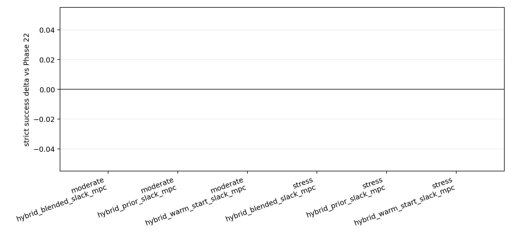
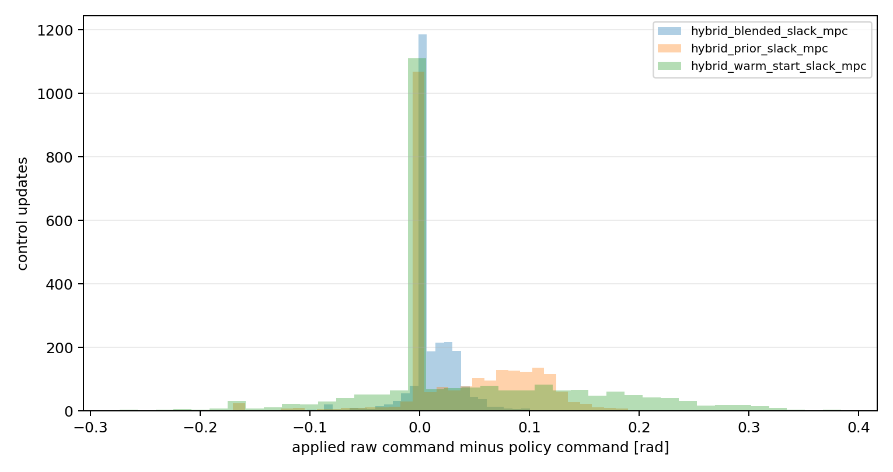
Timing and onboard realism
The timing benchmark measured Python/CasADi loop timing across PID, gain-scheduled LQR, nominal NMPC, and residual-corrected NMPC variants. The result is unsurprising but important: PID and LQR meet all tested p95 budgets at 10, 20, and 50 Hz. NMPC variants meet the 10 Hz budget in most rows, only partially meet 20 Hz, and do not meet 50 Hz in the current implementation.
Residual neural-network inference is sub-millisecond and is not the bottleneck. The expensive part is nonlinear optimization. That suggests the right future work: warm starts, code generation, smaller horizon formulations, solver tuning, and embedded-target measurements before making any onboard claim.
This timing result also shaped the hybrid design. If policy inference is tens of microseconds and nonlinear optimization is milliseconds, the learner is not valuable because it is the only component that can run. It is valuable if it reduces solve difficulty, improves warm starts, or gives the optimizer a better command prior. The performance question is therefore not "can a neural network replace MPC because it is faster?" It is "can a learned prior make constrained MPC more reliable or easier to solve while the optimizer remains in charge?"
| Component | Timing lesson | Design implication |
|---|---|---|
| PID / LQR | Comfortably meets the tested loop budgets. | Good fallback and baseline candidates, but not enough for the strict corridor task. |
| Residual model inference | Sub-millisecond in the tested Python setup. | The learning block is not the dominant compute cost. |
| NMPC solve | Dominates loop time and misses the 50 Hz p95 target. | Warm starts, code generation, and solver tuning matter more than micro-optimizing inference. |
| Hybrid policy prior | Cheap enough to evaluate before each solve. | Best used to shape or initialize MPC, not to replace the safety layer. |
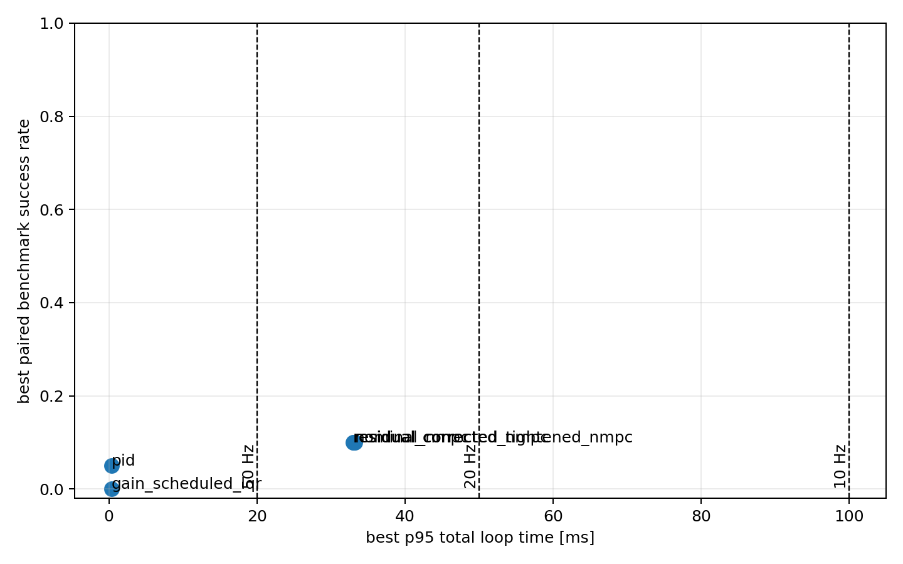
What this does not prove
This project does not prove that the current controller is flight-valid, certifiably robust, or optimal for a real reentry vehicle. The model is reduced-order. Altitude and velocity are scheduled rather than fully propagated. Aerodynamics are illustrative. Uncertainty distributions are research probes, not calibrated flight statistics. The oracle is non-causal. The learned policies are trained on synthetic reduced-order artifacts, not flight data, wind-tunnel data, CFD, or a validated 6DOF simulator.
It also does not prove that residual learning is useless. It proves something more specific: in this benchmark, the residual models tested so far do not improve strict zero-violation success when simply inserted as dynamics corrections. The useful learned component appeared later, after the problem was reframed around oracle structure, actuator-aware slack, and MPC authority.
The biggest modeling limitation is that the benchmark freezes the translational entry profile. That is exactly what made the project tractable, but it also means the controller cannot trade attitude behavior against trajectory shaping, guidance updates, bank-angle strategy, heating management, or range constraints. The alpha corridor is a stand-in for deeper vehicle constraints, not the complete safety envelope.
The biggest control limitation is that the feasibility ceiling is still an optimization artifact, not a theorem. The audited oracle is more truth-consistent than the earlier oracle, but it is still non-causal and reduced-order. Matching that ceiling is strong evidence for the benchmark story. It is not a reachability proof for a validated reentry vehicle.
| Claim the project supports | Claim it does not support |
|---|---|
| Nominal MPC can fail strict corridor success under paired uncertainty even when tracking looks plausible. | Nominal MPC is generally unsuitable for reentry control. |
| Simple residual dynamics correction did not improve strict success in this benchmark. | Learning-augmented MPC cannot work. |
| Slack-first objectives and feasibility audits changed the interpretation of the failures. | The audited ceiling is a formal vehicle reachability boundary. |
| Hybrid imitation plus slack-MPC matched the audited reduced-order benchmark ceiling. | The hybrid controller is flight-ready or certified robust. |
Strongest honest claim: in a reproducible reduced-order benchmark, strict alpha-corridor success exposed the limits of nominal MPC, naive robustification, and simple residual learning; feasibility-aware slack MPC and hybrid oracle imitation matched the audited benchmark ceiling.
The research lesson
The real lesson is not that MPC failed. The real lesson is that MPC made the failure legible. With solver logs, slack variables, paired Monte Carlo scenarios, alpha-miss diagnostics, timing measurements, oracle ceilings, and command-prior comparisons, the project can say more than "tracking was bad."
It can say: the hard part is preserving a strict angle-of-attack corridor under uncertainty, actuator dynamics, and possible infeasibility. Robust MPC asks whether we can plan for families of futures instead of one nominal future. Learning-augmented MPC asks whether data can predict mismatch, imitate useful oracle structure, or warm-start the optimizer without surrendering constraints.
The project's answer is not "yes, solved." It is more useful: start with nominal MPC, let it fail honestly, diagnose the corridor misses, estimate the feasibility ceiling, then add learning only where it helps the constrained controller make better decisions.
The most important design pattern is therefore not "MPC plus neural network." It is a sequence:
1. Define the corridor before optimizing the controller.
2. Keep the benchmark fixed while controller variants change.
3. Log slack, solver status, actuator activity, and failure labels.
4. Treat negative results as constraints on the next hypothesis.
5. Estimate feasibility before declaring a controller inadequate.
6. Use learning as a prior when it helps the optimizer, not as a way around the constraints.That pattern is portable beyond this reduced-order reentry model. It is how learning-augmented control should feel when it is being honest: not a black-box replacement for dynamics and constraints, but a data-driven assistant to a controller that still has to answer to physics, actuators, and logged evidence.